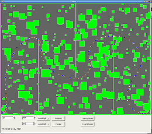
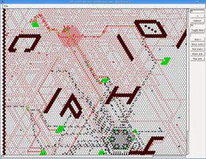
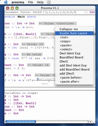
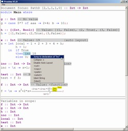
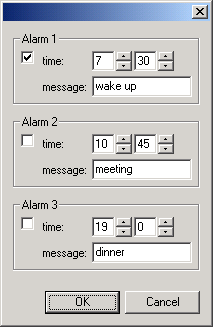

Application screenshots
At the moment, only small to medium sized programs have been written in wxHaskell and this page shows some of them. If you know about an interesting wxHaskell application, write us and it may be presented here too :-)
At the moment, only small to medium sized programs have been written in wxHaskell and this page shows some of them. If you know about an interesting wxHaskell application, write us and it may be presented here too :-)
Dazzle. Dazzle is a Bayesian belief network editor that is developed by the Decision Support System group of Utrecht University. Dazzle uses the Smile C++ library, developed by the Decision Systems Laboratory of Pittsburgh University, to leverage standard Bayesian belief network algorithms. The interface is highly specialized, featuring custom controls for representing multi-dimensional statistical nodes.
ICFP Programming Contest 2003 & 2004 – the technology behind the winners. [www-2003 ,www-2004]. wxHaskell 0.7 was used in the ICFP 2004 programming contest by team Dunkosmiloolump to create an "ant" simulator – and they won the contest! An early version of wxHaskell has been used in the ICFP 2003 contest by Team Dom to create a graphical editor for solving the tracks. The entry is interesting as they created the interface in a single day, and also used C code fragments to directly program the wxWidgets repaint handler.
|  |  |
| Track editor (click on image to enlarge) | Ant simulator (click on image to enlarge) |
hsReversi [www-page]. Lucas Torreão, Emanoel Barreiros, Hilda Borborema, and Keldjan Alves have written a reversi game with wxHaskell. It is possible to play versus CPU or versus another human player. The window appearance can be changed at any time in game, using the "skins" feature. It is available in portugese only.
GeBoP [www-page]. Maarten Löffler has written GeBoP, the General Board games Player. This application uses a generic game engine to host 8 different games that can be played against the computer. A tree control is used to visualize the state of the game engine, and an MDI interface is used to display several games simultaneously. Source is available on the GeBoP website.
Proxima [www-page]. The Proxima generic structure editor is written by Martijn Schrage. Proxima is part of an ongoing research project to combine both structured editing operations with free editing (and if you look closely at the screenshot you can see that the variables in scope, the types, and even values are automatically computed).
|  |  |
| MacOS X (click on image to enlarge) | Windows XP (click on image to enlarge) |
 Functional Forms [www-page]. Sander Evers has made a library for wxHaskell to concisely create forms: dialogs that display and edit a set of values. All edit actions are automatically checked and converted to an appropiate Haskell form.
HCPN [www-page]. Claus Reinke has made an experimental graphical editor for Haskell Coloured Petri Nets (HCPN).
HPView [www-page]. Wei Tan has made a graphical heap profile viewer for GHC with wxHaskell, called HPView. It is intended as an interactive alternative to the hp2ps utility (included in GHC), which allows zooming and filtering of graph columns.
Haskell on the cover of a magazine! wxHaskell was featured in a two-page article in the october 2003 version of L'informaticien, a popular French PC magazine. The article has been written by Frédéric Mazué. Here are some screenshots:
{kind=link}
{kind=link}
{kind=link}
{kind=link}
{kind=link}
{kind=link}
{kind=link}
{kind=link}
{kind=link}
{kind=link}